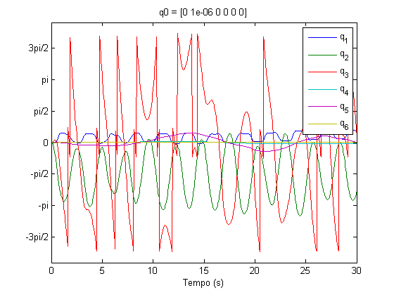
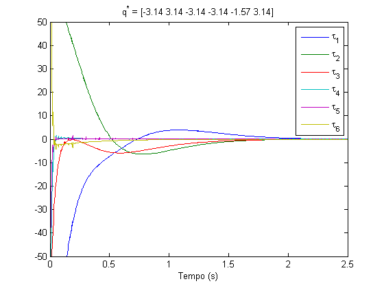

Contents
function projeto(p560)
qz = [0 0 0 0 0 0]; % zero angles, L shaped pose qr = [0 pi/2 -pi/2 0 0 0]; % ready pose, arm up qs = [0 0 -pi/2 0 0 0]; robot = p560.nofriction(); robot_no_friction = p560.nofriction('all'); robot_no_gravity = SerialLink(robot); robot_no_gravity.gravity = [0; 0; 0];
1.3 - Simulação em malha aberta
Com torque pra compensar a gravidade
function simulacao1_3(q0) tempo = 5; tau = robot.rne([0, pi/2, -pi/2, 0, 0, 0], qz, qz); torqFun = @(r, t, q, qd)tau; [t, q] = robot.fdyn(tempo, torqFun, q0, qz); plotAngles(t, q, ['q0 = ', mat2str(q0, 3)]); snapnow; end simulacao1_3([0, 0, 0, 0, 0, 0]); simulacao1_3([0, pi, -pi/2, 0, 0, 0]); simulacao1_3([0, pi/2, -pi/2, 0, 0, 0]); simulacao1_3([0, pi/2+0.05, -pi/2, 0, 0, 0]);
1.4.a - Simulação livre com atrito viscoso
function simulacao1_4(robot, q0) tempo = 30; [t, q, qd] = robot.fdyn(tempo, 0, q0, qz); K = zeros(1, size(q, 1)); for i = 1:size(q, 1) M = robot.inertia(q(i, :)); K(i) = 1/2*qd(i, :)*M*qd(i, :)'; end plotAngles(t, q, ['q0 = ', mat2str(q0, 3)]); snapnow; plot(t, K); title('Energia cinética'); xlabel('Tempo (s)'); ylabel('Energia (J)'); snapnow; end simulacao1_4(robot, [0, 0, 0, 0, 0, 0]); simulacao1_4(robot, [0, 1e-6, 0, 0, 0, 0]);
1.4.b - Simulação livre com atrito viscoso
simulacao1_4(robot_no_friction, [0, 0, 0, 0, 0, 0]); simulacao1_4(robot_no_friction, [0, 1e-6, 0, 0, 0, 0]);
1.5 - Simulação de controlador PD
function simulacao1_5(q0, qRef) Kp = diag([50, 50, 50, 50, 50, 60]); Kd = diag([20, 20, 20, 20, 20, 22]); tempo = 5; tempos = []; taus = []; [t, q] = robot_no_gravity.fdyn(tempo, @torqFun1_5, q0); plotAngles(t, q, ['q^* = ', mat2str(qRef, 3)]); snapnow; plot(tempos, taus); title(['q^* = ', mat2str(qRef, 3)]); legend('\tau_1', '\tau_2', '\tau_3', '\tau_4', '\tau_5', '\tau_6'); xlabel('Tempo (s)'); ylim([-50, 50]); xlim([0, 2.5]); snapnow; function [tau] = torqFun1_5(~, t, q, qd) tau = -(q-qRef)*Kp-qd*Kd; tempos = [tempos t]; taus = [taus; tau]; end end simulacao1_5([0, 0, 0, 0, 0, 0], [pi/2, 0, -pi/2, pi, pi/2, -pi]); simulacao1_5([0, pi, -pi/2, 0, 0, 0], [pi, 0, 0, pi, -pi/2, 0]); simulacao1_5([0, pi/2, -pi/2, 0, 0, 0], [-pi, pi, -pi, -pi, -pi/2, pi]);
end